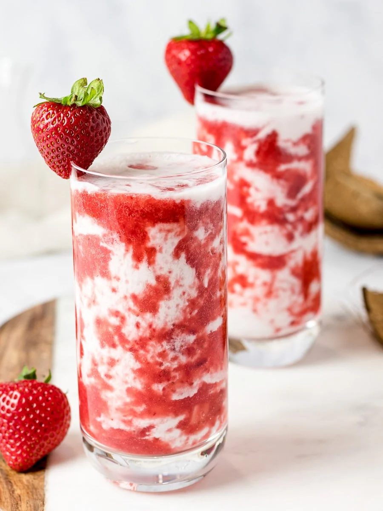

Korean Strawberry Milk

Description
This is a recipe for Korean Strawberry Milk by the website Drive Me Hungry.
I want to make this one day. It looks so delicious and refreshing.
Ingredients
- 1 1/4 cups strawberries - fresh or frozen
- 1/4 cup sugar
- 3/4 cup fresh strawberries
- 2 cups any milk of choice (coconut milk recommended)
Steps
- Puree the 1¼ cups of strawberries using a blender, food processor, or masher. If using frozen strawberries, you can thaw them a bit in the microwave or use a high speed blender.
- In a small pot, add the strawberry puree, sugar, and a third of the cut strawberry pieces. Heat until it comes to a boil. Let it boil for 1 minute, turn off the heat, and let it cool on the counter or chill in the refrigerator.
(Note: You can opt to skip the boiling step but I recommend you consume this the day of making it. The puree will also be more thin and watery but will have more fresh strawberry flavor as it's not heated.)
- Take two 16 ounce glasses and add half of the cooled strawberry puree and half of the remaining cut strawberry pieces into each glass. Swirl it up and around the glass to make a pattern. Next pour half of your milk of choice into each glass and serve immediately. Optional: top with whipped cream